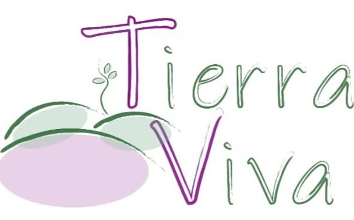

Bienvenidos
Productos caseros elaborados con amor, tradición y los mejores ingredientes naturales.
Mi madre me enseñó la cocina desde pequeña, y gracias a ella aprendí a disfrutar de los sabores y del placer de preparar alimentos con cariño.
El IAG me permitió descubrir nuevas técnicas y entender mejor cómo conservar lo natural de cada ingrediente.
Hoy, quiero compartir con ustedes mis sabores, hechos con dedicación y con todo el amor de quien cocina desde el corazón.
Porque aquí nos solo ofrecemos alimentos:
Compartimos momentos que saben a hogar.